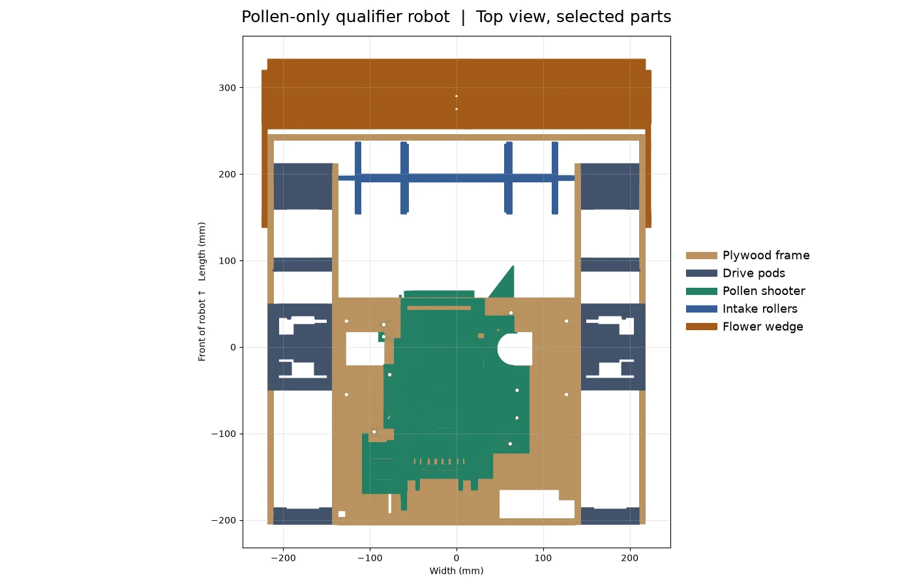

We design the whole robot in CAD (Onshape) and make most of its parts ourselves: plywood plates on a laser cutter and custom pieces on 3D printers. This page shows our Nov 6 qualifier design and the tests still ahead.
The robot right now
We chose a Pollen-only robot for the qualifier. The front rollers collect balls from the floor, and a hinged wedge lifts Pollen from the flower. A powered feeder hands the ball to Shooter B, which shoots forward over the intake. We are keeping the Nectar design for later. EN-59

Local qualifier CAD, Nov 6 (EN-83). The view shows selected parts with the flower wedge lowered. With the wedge folded for the start, the model measures 453.4 × 455.35 × 347.19 mm in the starting position. We still need to measure the assembled robot.
Part
What it is now
Evidence
Intake and flower wedge
A shortened first roller and a compact wedge on two short arms. The wedge moves out of the shot path before we shoot. EN-72 · EN-78
CAD checked · flower pickup trials pending
Pollen shooter B
A fixed feed ramp, stiffer hood and 26-tooth servo gear. The hood moves from 20° to 55° in the model. EN-74
CAD checked · physical gear fit and controlled shots pending
Drive pods
Printed ties join the plywood side plates. Short screws thread into nuts trapped in the prints. EN-83
CAD checked · physical fit and load tests pending
Electronics
The rear wall guards the recessed power switch from bumps. EN-81
CAD checked · installed fit pending
Our earlier bench tests and two-shooter layout are in the engineering notebook. We still need current robot photos, counted pickup and shot trials, a wheel speed trace and localization return tests. EN-82
How we build in-house
Laser cutter
1/4 in (6.35 mm) plywood for plates, walls and panels.
The bed is 305 × 381 mm, smaller than our side plates. We split big plates with seams that step around bolt holes and add a splice bracket on every seam. EN-01
We cut small test strips first (holes of 11.9, 12.0 and 12.1 mm) to find the best bearing fit. EN-08
Parts get engraved labels (FRONT, TOP) so they go on the right way.
3D printers
PLA on a Bambu A1 and P1S, both with a 256 mm bed.
We design every print to fit that bed. In the latest drive update, we checked that all 22 revised prints fit the bed. EN-83
Long thin parts print on their side, so the layers run the long way and don't snap. EN-09
When a tall print failed, we split it in two with pegs. EN-26
Fasteners and assembly
We use #8-32 fasteners for the plywood frame and keep M3 screws where they fit the hardware. The latest drive ties use separate short screws and captive lock nuts so we can assemble each side on its own. EN-03 · EN-83
Every change follows the same steps
Change the model in CAD.
Check for clashes, so no two parts overlap, every screw can be reached, and the robot still fits inside 18 inches.
Export the files: laser-cutting files for plywood, STL files for printing.
Make and fit the part, then test it.
Write it up in our engineering notebook: the problem, the numbers, the options and the result.
Control
What each sensor does, the problem it solves, and how it works. No code needed to follow it.
Shooter speed control
Sensor: an encoder on each shooter motor counts how fast the motor turns.
Problem: with a fixed power, the wheel slows down when the battery runs low and when a ball goes through. Then shots land in different places.
How it works: we give each shooter a target speed. Many times a second the Control Hub compares the real speed with the target and adds or takes away power (a PIDF loop: a base power for that speed, plus a correction that grows with the error).
Tuning: FTC Dashboard draws live graphs of target vs real speed on a laptop, so we can change the numbers and watch the line. Our goal: get back within 5% of the target after each shot.
Status: the code builds, but it hasn't run on the robot yet, so we have no tuned values or test numbers. EN-43
Knowing where the robot is
Sensors: encoders on the four drive motors, and the gyro (IMU) built into the Control Hub.
Problem: in autonomous nobody drives, so the robot has to know where it is on the field.
How it works: our drive code (Road Runner) adds up how far each wheel turned to work out the robot's position, and the gyro tells it which way it is facing.
Selected in code: Road Runner uses the drive encoders and IMU. The goBILDA Pinpoint option exists in the code. It is inactive, and the tracking wheel mounts are a CAD study. EN-82
Status: no tuning results in our notebook yet for this season's robot.
Shooter hood angle
In Shooter B CAD, the servo turns 236.9° through a 26-tooth gear to move the hood from 20° to 55°. We still need to measure actual travel and check gear fit on the bench. EN-74